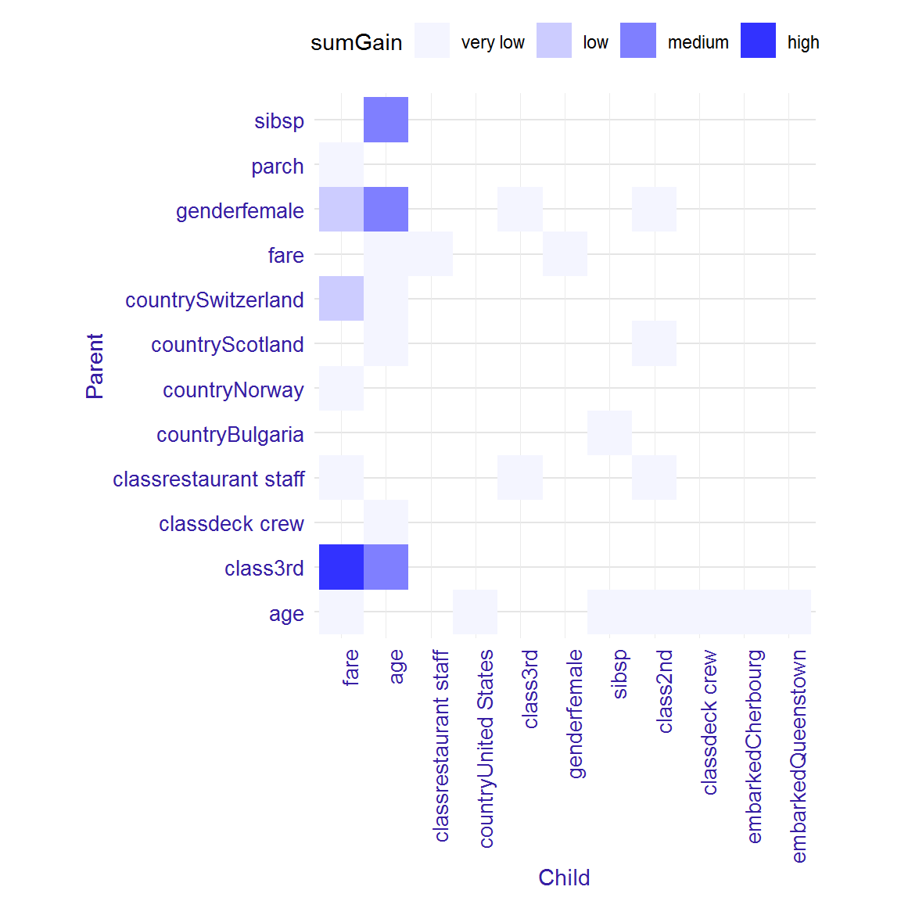
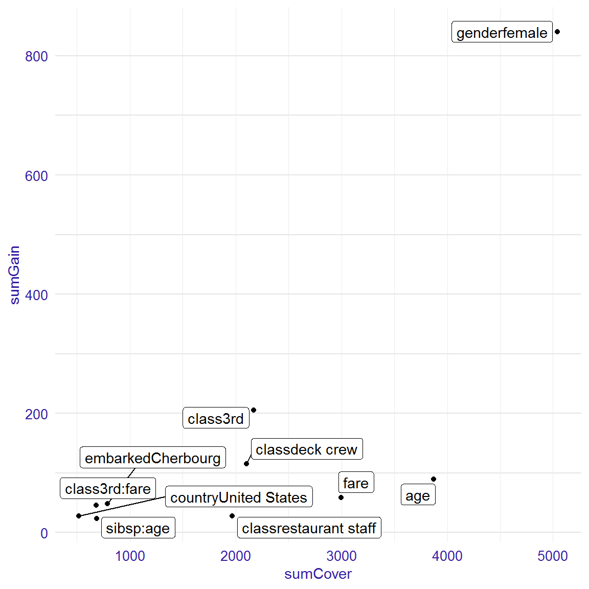

EIX: Titanic data
Ewelina Karbowiak
2018-29-03
Source:../vignettes/vignette_titanic.Rmd
vignette_titanic.RmdData Info
This vignette shows usage of EIX package for titanic data. This dataset was copied from stablelearner package. With EIX package we explain XGBoost classification model concerning the survival problem. More details about EIX package here.
library(data.table)
set.seed(4)
titanic_data<-data.table(na.omit(titanic_data))
knitr::kable(head(titanic_data))| gender | age | class | embarked | country | fare | sibsp | parch | survived |
|---|---|---|---|---|---|---|---|---|
| male | 42 | 3rd | Southampton | United States | 7.11 | 0 | 0 | no |
| male | 13 | 3rd | Southampton | United States | 20.05 | 0 | 2 | no |
| male | 16 | 3rd | Southampton | United States | 20.05 | 1 | 1 | no |
| female | 39 | 3rd | Southampton | England | 20.05 | 1 | 1 | yes |
| female | 16 | 3rd | Southampton | Norway | 7.13 | 0 | 0 | yes |
| male | 25 | 3rd | Southampton | United States | 7.13 | 0 | 0 | yes |
library("Matrix")
sparse_matrix <- sparse.model.matrix(survived ~ . - 1, data = titanic_data)Interactions
Next we explore interactions using interactions() functions and its plot.
interactions<-interactions(xgb_model, sparse_matrix, option = "interactions")
head(interactions, 15)## Parent Child sumGain frequency
## 1: class3rd fare 45.577697 5
## 2: sibsp age 23.668270 3
## 3: genderfemale age 23.227908 4
## 4: class3rd age 22.997468 5
## 5: genderfemale fare 13.975253 2
## 6: countrySwitzerland fare 11.700150 2
## 7: fare classrestaurant staff 7.023322 1
## 8: age countryUnited States 4.857722 1
## 9: countrySwitzerland age 4.250423 2
## 10: classrestaurant staff class3rd 4.190052 1
## 11: classdeck crew age 4.165662 2
## 12: fare genderfemale 4.100826 1
## 13: age sibsp 4.055897 1
## 14: age fare 4.045337 1
## 15: genderfemale class2nd 3.013065 1plot(interactions)
Variables’ and interactions’ importance
importance<-importance(xgb_model, sparse_matrix, option = "both")
head(importance, 15)## Feature sumGain sumCover meanGain meanCover frequency
## 1: genderfemale 840.50 5042.000 60.030 360.100 14
## 2: class3rd 205.10 2172.000 20.510 217.200 10
## 3: classdeck crew 115.50 2102.000 19.250 350.300 6
## 4: age 90.00 3870.000 5.294 227.600 17
## 5: fare 58.59 2996.000 3.255 166.400 18
## 6: embarkedCherbourg 48.64 787.500 24.320 393.800 2
## 7: class3rd:fare 45.58 682.100 9.116 136.400 5
## 8: countryUnited States 27.46 519.500 13.730 259.800 2
## 9: classrestaurant staff 27.41 1970.000 4.569 328.300 6
## 10: sibsp:age 23.67 684.900 7.889 228.300 3
## 11: genderfemale:age 23.23 849.400 5.807 212.400 4
## 12: class3rd:age 23.00 971.200 4.599 194.200 5
## 13: sibsp 19.56 921.200 6.519 307.100 3
## 14: genderfemale:fare 13.98 348.900 6.988 174.500 2
## 15: countrySwitzerland:fare 11.70 6.044 5.850 3.022 2
## mean5Gain
## 1: 159.700
## 2: 37.050
## 3: 22.900
## 4: 12.700
## 5: 6.433
## 6: 24.320
## 7: 9.116
## 8: 13.730
## 9: 5.247
## 10: 7.889
## 11: 5.807
## 12: 4.599
## 13: 6.519
## 14: 6.988
## 15: 5.850plot(importance, radar=FALSE)
plot(importance)
Explanation of the single prediction including interactions
Let’s see an explanation of the prediction for an 18-year-old from England who has traveled 3rd class.
data <- titanic_data[27,]
new_observation <- sparse_matrix[27,]
wf<-waterfall(xgb_model, new_observation, data, option = "interactions")
wf## contribution
## xgboost: intercept -0.819
## xgboost: gender = 2 1.714
## xgboost: class = 3 -1.437
## xgboost: country:fare = 15:8.06 -1.011
## xgboost: country = 15 -0.635
## xgboost: embarked = 4 0.310
## xgboost: age:class = 18:3 0.119
## xgboost: class:age = 3:18 -0.116
## xgboost: fare = 8.06 -0.103
## xgboost: age:country = 18:15 0.102
## xgboost: class:fare = 3:8.06 0.096
## xgboost: age = 18 -0.094
## xgboost: age:embarked = 18:4 0.089
## xgboost: gender:class = 2:3 -0.043
## xgboost: sibsp:age = 0:18 -0.022
## xgboost: sibsp = 0 0.021
## xgboost: gender:age = 2:18 0.020
## xgboost: fare:age = 8.06:18 0.019
## xgboost: gender:fare = 2:8.06 -0.018
## xgboost: age:sibsp = 18:0 0.010
## xgboost: parch:fare = 0:8.06 0.002
## xgboost: parch = 0 0.001
## xgboost: prediction -1.794plot(wf)